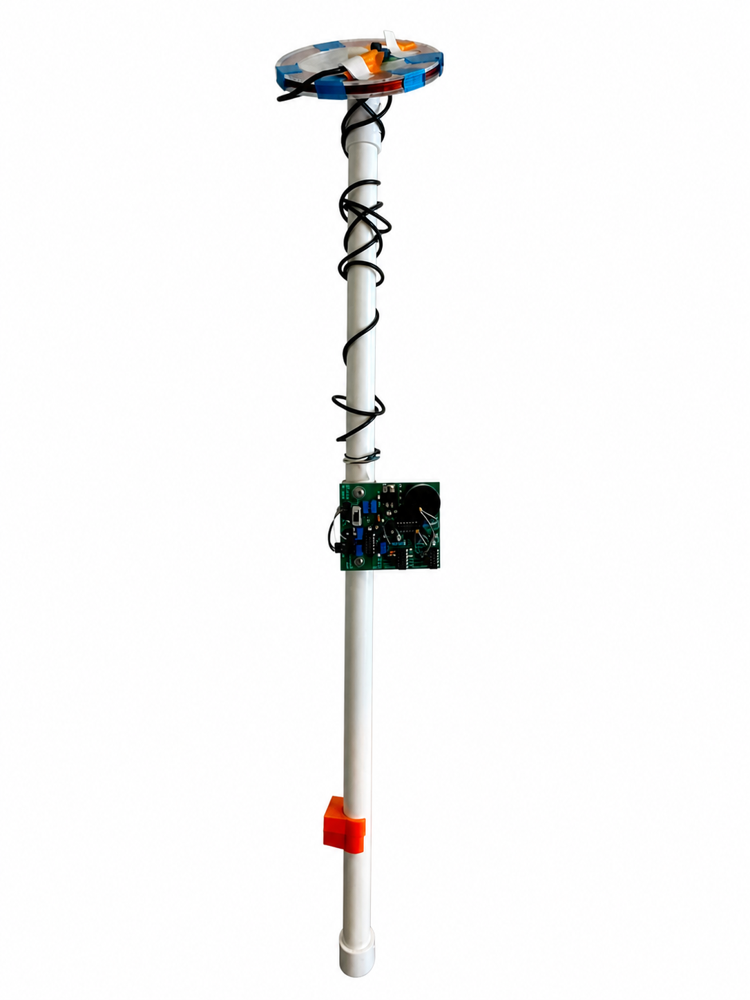

PCB Design · Analog Circuits
Metal Detector PCB
An oscillator-based metal detector circuit turned into a fabricated PCB. I assembled the board, debugged the hardware, and documented the build in an ESE 3190 technical report.

PCB 3D View
1/3
Overview
This project turned an oscillator-based metal-detection circuit into a fabricated PCB. The build forced layout decisions to show up in hardware: component placement, signal routing, soldering quality, and parasitic effects all affected the final detector behavior.
Design Process
- Converted the circuit schematic into a manufacturable PCB layout.
- Placed and routed analog-sensitive sections to reduce interference and improve testability.
- Assembled, soldered, inspected, and debugged the fabricated board before functional testing.
- Documented the design methodology, testing procedure, and results in a technical report.
Completed Detector

Completed metal detector assembly
1/2
Technical Report
The technical report is embedded below and can be scrolled directly on this page. Use the button beneath it to open the PDF in a separate window.